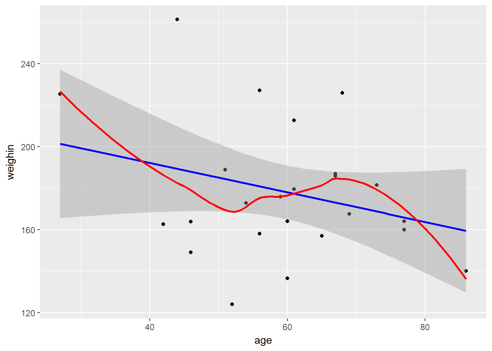

Chapter 10 Linear Regression
Chapter Links
Unit Assignment Links
Unit 3 Writen Part: Skeleton - pdf
Unit 3 R Part: Directions - pdf and Skeleton - Rmd
Unit 3 Reading to Summarize: Article - pdf
Inho’s Dataset: Excel
Related Readings
Required Packages
library(tidyverse) # Loads several very helpful 'tidy' packages
library(haven) # Read in SPSS datasets
library(car) # Companion for Applied Regression (and ANOVA)
library(broom) # Convert STatistical Analysis Objects into Tidy Dataframes
library(magrittr) # A Forward-Pipe Operator for RExample: Cancer Experiment
The Cancer dataset was introduced in chapter 3.
10.1 Visualize the Raw Data
Always plot your data first!
cancer_clean %>%
ggplot(aes(x = age,
y = weighin)) +
geom_point() +
geom_smooth(method = "lm", se = TRUE, color = "blue") + # straight line (linear model)
geom_smooth(method = "loess", se = FALSE, color = "red") # loess line (moving window)
10.2 Fitting a Simple Regression Model
The lm() function needs at least TWO arguments:
formula - The name of the outcome or dependent variable (DV) goes on the left of the tilda symbol and the name of the predictor or independent variable (IV) comes after:
continuous_y ~ continuous_xdata - Since the datset is not the first argument in the function, you must use the period to signify that the datset is being piped from above
data = .
cancer_clean %>%
lm(weighin ~ age, # formula: order DOES matter
data = .) # data piped from above
Call:
lm(formula = weighin ~ age, data = .)
Coefficients:
(Intercept) age
220.6899 -0.7111 10.3 Extracting Information From the Model
10.3.1 Model Overview
To view more complete information, add a summary() step using a pipe AFTER the lm() step
cancer_clean %>%
lm(weighin ~ age, # formula: order DOES matter
data = .) %>% # data piped from above
summary()
Call:
lm(formula = weighin ~ age, data = .)
Residuals:
Min 1Q Median 3Q Max
-59.713 -19.535 -2.935 12.954 71.998
Coefficients:
Estimate Std. Error t value Pr(>|t|)
(Intercept) 220.6899 30.1076 7.33 1.86e-07 ***
age -0.7111 0.4938 -1.44 0.163
---
Signif. codes: 0 '***' 0.001 '**' 0.01 '*' 0.05 '.' 0.1 ' ' 1
Residual standard error: 31.28 on 23 degrees of freedom
Multiple R-squared: 0.08271, Adjusted R-squared: 0.04282
F-statistic: 2.074 on 1 and 23 DF, p-value: 0.1633NOTE - Variable Designation Matters!
In simple linear regression (with only one predictor DV), the slope estimate (\(\hat{\beta_1}\)) is different depending on the designation of \(x\) and \(y\) (two ordering), but the \(p-values\) are the same.
cancer_clean %>%
lm(age ~ weighin, # formula: order DOES matter
data = .) %>% # data piped from above
summary()
Call:
lm(formula = age ~ weighin, data = .)
Residuals:
Min 1Q Median 3Q Max
-27.160 -6.277 1.514 8.258 21.908
Coefficients:
Estimate Std. Error t value Pr(>|t|)
(Intercept) 80.37531 14.61964 5.498 1.37e-05 ***
weighin -0.11631 0.08077 -1.440 0.163
---
Signif. codes: 0 '***' 0.001 '**' 0.01 '*' 0.05 '.' 0.1 ' ' 1
Residual standard error: 12.65 on 23 degrees of freedom
Multiple R-squared: 0.08271, Adjusted R-squared: 0.04282
F-statistic: 2.074 on 1 and 23 DF, p-value: 0.163310.3.2 Model Fit or Accuracy
One line for the entire model
cancer_clean %>%
lm(weighin ~ age,
data = .) %>%
broom::glance() r.squared adj.r.squared sigma statistic p.value df logLik
1 0.08270615 0.04282381 31.28435 2.073754 0.1633263 2 -120.5091
AIC BIC deviance df.residual
1 247.0183 250.6749 22510.34 2310.3.3 Beta Estimates
One line for each parameter, intercept and a slope for each predictor
cancer_clean %>%
lm(weighin ~ age,
data = .) %>%
broom::tidy() term estimate std.error statistic p.value
1 (Intercept) 220.6899336 30.1075690 7.330048 1.859355e-07
2 age -0.7110988 0.4938003 -1.440053 1.633263e-0110.3.4 Confidence Intervals
cancer_clean %>%
lm(weighin ~ age,
data = .) %>%
confint() 2.5 % 97.5 %
(Intercept) 158.407682 282.972185
age -1.732603 0.31040510.3.5 Predictions, Residuals, ect.
One line for each subject in the original dataset
cancer_clean %>%
lm(weighin ~ age,
data = .) %>%
broom::augment() weighin age .fitted .se.fit .resid .hat .sigma
1 124.0 52 183.7128 7.306243 -59.712795 0.05454237 29.18516
2 160.0 77 165.9353 10.612917 -5.935324 0.11508411 31.95915
3 136.5 60 178.0240 6.259394 -41.524004 0.04003229 30.68475
4 179.6 61 177.3129 6.292807 2.287094 0.04046081 31.98358
5 175.8 59 178.7351 6.264845 -2.935103 0.04010205 31.98107
6 167.6 69 171.6241 7.778883 -4.024115 0.06182731 31.97519
7 186.0 67 173.0463 7.235818 12.953687 0.05349597 31.86124
8 158.0 56 180.8684 6.509929 -22.868400 0.04330104 31.59668
9 212.8 61 177.3129 6.292807 35.487094 0.04046081 31.04096
10 189.0 51 184.4239 7.573036 4.576106 0.05859842 31.97164
11 149.0 46 187.9794 9.193178 -38.979388 0.08635295 30.78321
12 157.0 65 174.4685 6.793659 -17.468510 0.04715778 31.75910
13 186.0 67 173.0463 7.235818 12.953687 0.05349597 31.86124
14 163.8 46 187.9794 9.193178 -24.179388 0.08635295 31.52952
15 227.2 56 180.8684 6.509929 46.331600 0.04330104 30.35140
16 162.6 42 190.8238 10.724907 -28.223783 0.11752571 31.33954
17 261.4 44 189.4016 9.939503 71.998414 0.10094276 27.58833
18 225.4 27 201.4903 17.289500 23.909735 0.30542932 31.39722
19 226.0 68 172.3352 7.496013 53.664786 0.05741250 29.73750
20 164.0 77 165.9353 10.612917 -1.935324 0.11508411 31.98444
21 140.0 86 159.5354 14.442288 -19.535435 0.21311688 31.64098
22 181.5 73 168.7797 9.092365 12.720280 0.08446943 31.86163
23 187.0 67 173.0463 7.235818 13.953687 0.05349597 31.84096
24 164.0 60 178.0240 6.259394 -14.024004 0.04003229 31.84155
25 172.8 54 182.2906 6.848710 -9.490597 0.04792514 31.92016
.cooksd .std.resid
1 0.1111477213 -1.96299546
2 0.0026449421 -0.20168166
3 0.0382658612 -1.35470223
4 0.0001174338 0.07463210
5 0.0001915486 -0.09575992
6 0.0005811275 -0.13280118
7 0.0051189260 0.42560342
8 0.0126396540 -0.74734486
9 0.0282726125 1.15800921
10 0.0007073659 0.15075841
11 0.0802982601 -1.30352305
12 0.0080972760 -0.57202934
13 0.0051189260 0.42560342
14 0.0308977397 -0.80859119
15 0.0518821825 1.51412796
16 0.0614150890 -0.96036677
17 0.3307213270 2.42718115
18 0.1849026825 0.91704250
19 0.0950731282 1.76685738
20 0.0002812126 -0.06576211
21 0.0671057022 -0.70394852
22 0.0083303463 0.42494545
23 0.0059397751 0.45845919
24 0.0043647273 -0.45752692
25 0.0024328993 -0.3109073110.4 Model Diagnostics
10.4.1 Base R Graphics
par(mfrow = c(2, 2))
cancer_clean %>%
lm(weighin ~ age,
data = .) %>%
plot()
par(mfrow = c(1, 1))